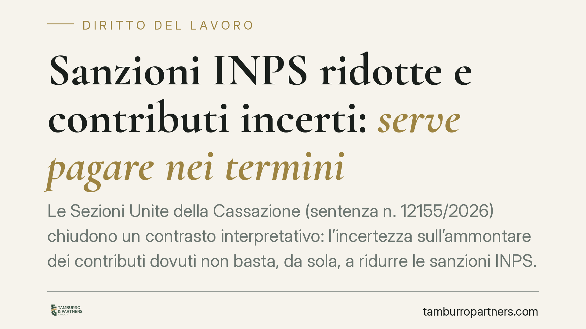

Sanzioni INPS ridotte e contributi incerti: serve pagare nei termini
Le Sezioni Unite della Cassazione (sentenza n. 12155/2026) chiudono un contrasto interpretativo: l'incertezza sull'ammontare dei contributi dovuti non basta, da sola, a ridurre le sanzioni INPS. Il beneficio spetta solo se l'azienda versa entro il termine fissato dall'ente. Un pronunciamento che ridefinisce i margini di manovra dei datori di lavoro in contenzioso previdenziale.

Il caso
Una vicenda partita dalla Corte d'Appello di Bologna arriva alle Sezioni Unite. Il nodo: quando un'azienda paga in ritardo i contributi perché il loro importo era oggettivamente incerto, ha comunque diritto alla riduzione delle sanzioni civili previste dall'INPS?
La risposta della Cassazione è netta e ribalta un orientamento più favorevole ai datori di lavoro: l'incertezza interpretativa non è un salvacondotto. Per ottenere il trattamento sanzionatorio più mite occorre pagare entro il termine indicato dall'ente previdenziale.
Inquadramento normativo
La disciplina è contenuta nell'art. 116, comma 10, della legge n. 388 del 2000. La norma prevede un regime sanzionatorio ridotto per il datore di lavoro che ometta o ritardi il versamento contributivo a causa di oggettive incertezze connesse a contrastanti orientamenti giurisprudenziali o amministrativi sulla sussistenza dell'obbligo.
La ratio è chiara: se l'azienda non paga perché nemmeno gli interpreti concordavano sull'esistenza o sull'entità del debito, non è giusto colpirla con le sanzioni piene. Ma il legislatore ha subordinato il beneficio a una condizione precisa: il versamento deve avvenire entro il termine fissato dagli enti impositori.
È proprio su questo requisito che le Sezioni Unite hanno posto l'accento. Il contrasto interpretativo riguardava la possibilità di considerare tempestivo il pagamento anche quando eseguito oltre quel termine, purché l'azienda dimostrasse la buona fede legata all'incertezza. La Corte ha escluso questa lettura: il termine è condizione di accesso al beneficio, non un elemento negoziabile.
Cosa cambia in concreto
Il messaggio per i datori di lavoro è pragmatico. L'incertezza sull'importo dovuto continua a rilevare, ma da sola non sospende gli obblighi di versamento né protegge dalle sanzioni ordinarie.
Chi riceve una richiesta dall'INPS e ritiene l'importo controverso non può limitarsi ad attendere l'esito di un eventuale contenzioso confidando nella riduzione sanzionatoria. Deve muoversi entro il termine assegnato dall'ente.
Si crea quindi una tensione operativa: da un lato la volontà legittima di contestare una pretesa ritenuta infondata, dall'altro il rischio di perdere il beneficio sanzionatorio se non si paga nei tempi. La sentenza chiarisce che il pagamento tempestivo e la contestazione nel merito non sono alternativi: si può versare e continuare a contestare la debenza.
Lo strumento che concilia le due esigenze è il pagamento con riserva di ripetizione: l'azienda versa entro il termine, accede al regime sanzionatorio più favorevole, e conserva il diritto di chiedere la restituzione se il contenzioso le dà ragione.
Il valore del pronunciamento
Trattandosi di una decisione delle Sezioni Unite, l'orientamento assume particolare stabilità. È la formazione chiamata a risolvere i contrasti interpretativi e la sua parola pesa sui giudici di merito nelle controversie future.
Per le aziende con contenziosi previdenziali pendenti, il quadro va riletto alla luce di questa pronuncia. Strategie difensive costruite sull'orientamento precedente potrebbero non reggere.
Cosa fare in concreto
- Verifica sempre il termine indicato dall'INPS nelle richieste di pagamento: è la data che decide l'accesso alla riduzione delle sanzioni, a prescindere dalla fondatezza della pretesa.
- Non confondere incertezza e sospensione dell'obbligo: l'esistenza di orientamenti contrastanti non ti autorizza ad attendere. Valuta il versamento entro i termini anche se contesti l'importo.
- Considera il pagamento con riserva di ripetizione: consente di conservare il beneficio sanzionatorio senza rinunciare a far valere le tue ragioni nel merito.
- Rivedi i contenziosi pendenti costruiti sull'orientamento superato e valuta con il tuo consulente l'impatto della sentenza n. 12155/2026.
- Documenta l'incertezza interpretativa con circolari, prassi e pronunce discordanti: resta un elemento rilevante per la difesa, purché accompagnato dal versamento tempestivo.
Conclusioni
Le Sezioni Unite fissano un principio di certezza: il beneficio sanzionatorio premia chi paga nei tempi, non chi si limita a invocare l'incertezza. Un approccio prudente combina versamento tempestivo e tutela nel merito, evitando di sacrificare l'uno all'altra.
---
*Contributo informativo a cura di Tamburro & Partners - Avv. Giuseppe Tamburro. Non costituisce parere legale.*
Ogni storia di lavoro ha i suoi tempi.
Se gestisci HR e vuoi un confronto su contenzioso, ispezioni o licenziamenti, scrivi allo studio. Ti rispondiamo entro un giorno lavorativo.